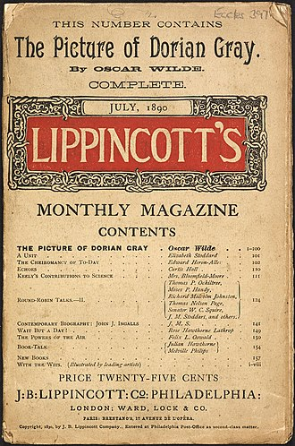

The story revolves around a portrait of Dorian Gray painted by Basil Hallward, a friend of Dorian's and an artist infatuated with Dorian's beauty. Through Basil, Dorian meets Lord Henry Wotton and is soon enthralled by the aristocrat's hedonistic worldview: that beauty and sensual fulfillment are the only things worth pursuing in life. Newly understanding that his beauty will fade, Dorian expresses the desire to sell his soul, to ensure that the picture, rather than he, will age and fade. The wish is granted, and Dorian pursues a libertine life of varied amoral experiences while staying young and beautiful; all the while, his portrait ages and visually records every one of Dorian's sins.
